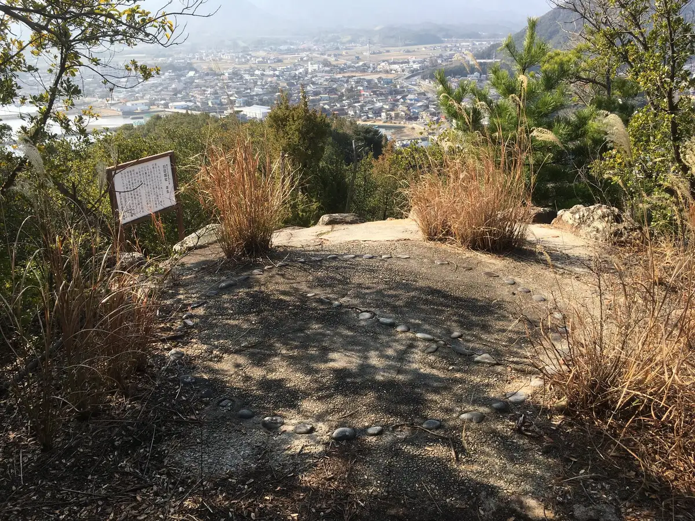
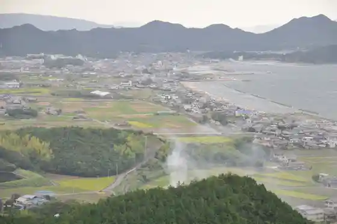
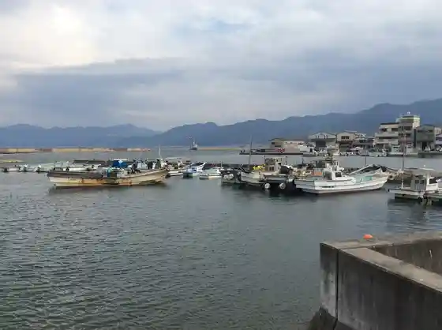
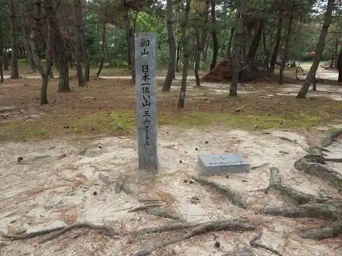
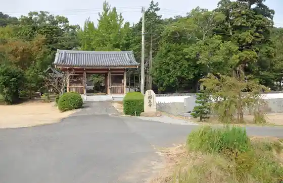

Japan / Kagawa / Higashikagawa
Higashikagawa
Higashikagawa · Kagawa
Higashikagawa
Highlighted on the Kagawa map.

Stay
Kurafuto Hotel Setochi
Guest House Amiimambosu
Guest House Ke’oKe’o
Guest House Marin
Guest House Sambonmatsu Minato
Setochi Resort Besseru Ochi
HOTEL AZ Kagawa Higashikagawa Mise
Seto Ie TSUDA
Dining
Sakana Gen
Aji Michi Gen
Yakidori
Taishu Sakaba Baron
Fuku Aji Sambonmatsu Mise
Kamebishi Chaya
UNWASTED
Gomei Furusato no Ie
Ware Wariyasu
Izakaya Tomi
Moto Takumi Higashikagawa Mise
Nuberuposuto
Maruichi
Gohanya Sho
Shokudo Oya
Sankichi Maru Suisan
Onsen
Setochi Resort Besseru Ochi Public Bath
Experience
Sanshu Izutsu Residence
Sights
Hikita Castle Ruins
Hikita no Machi Nami

Hikita Minato

Hakucho Shrine

Shaku Oji

Yoda Tera